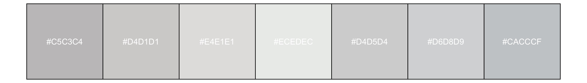

library(coralcolors)
show_colors(coral_palettes$acanthastrea, nrow=1)
show_colors(bleach(coral_palettes$acanthastrea), nrow=1)acanthastrea
Acanthastrea echinata
library(coralcolors)
show_colors(coral_palettes$acanthastrea, nrow=1)
show_colors(bleach(coral_palettes$acanthastrea), nrow=1)acropora1
Acropora cervicornis
acropora2
Acropora palmata
acropora3
Acropora millepora
acropora4
Acropora tenuis
australophyllia
Australophyllia wilsonii
show_colors(coral_palettes$australophyllia, nrow=1)
show_colors(bleach(coral_palettes$australophyllia), nrow=1)
cyphastrea
Cyphastrea sp.
show_colors(coral_palettes$cyphastrea, nrow=1)
show_colors(bleach(coral_palettes$cyphastrea), nrow=1)montipora
Montipora digitata
micromussa
Micromussa lordhowensis
show_colors(coral_palettes$micromussa, nrow=1)
show_colors(bleach(coral_palettes$micromussa), nrow=1)porites
Porites lobata
seriatopora
Seriatopora hysterix
show_colors(coral_palettes$seriatopora, nrow=1)
show_colors(bleach(coral_palettes$seriatopora), nrow=1)symbiodinium
Symbiodinium sp.
show_colors(coral_palettes$symbiodinium, nrow=1)
show_colors(bleach(coral_palettes$symbiodinium), nrow=1)